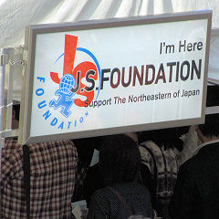

２０１１年
０５月14日（土）
広島グリーンアリーナ。
ひょんな事から
チケットが
手に入った。
メロディーコールに
浜田さんの曲を
設定していると、
それを聞いた仕事先の
Ｓさんから
チケットがある
という電話が
水曜日に入った。
Ｓさんの知り合いの
ゆみさん（ROAD&FLY）の
知り合いの女性が
宮城に行く事になって、
そのチケットを
譲って下さると。
・・・。
・・・。
席は、
Ｅ １８列９番。
終盤と言うのか、
アンコールの
センターステージが
近くてよく見えた。

チケットを定価で
譲って下さったので
お釣りの
６００円は
寄付した。
僕と彼女と週末に
〜The Last Weekend〜
（前略）
いつか子供達に
この時代を伝えたい
どんなふうに
人が希望（ゆめ）を
つないできたか
（後略）
作詞・作曲 浜田省吾
僕と彼女と週末に
※動画を視聴すると
通信環境によっては
高額なパケット料金が
かかる事がありますので
ご注意ください。